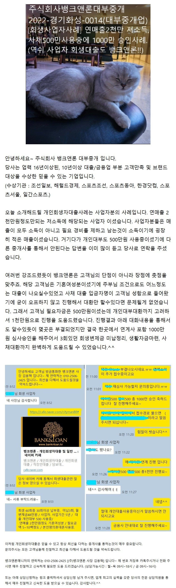
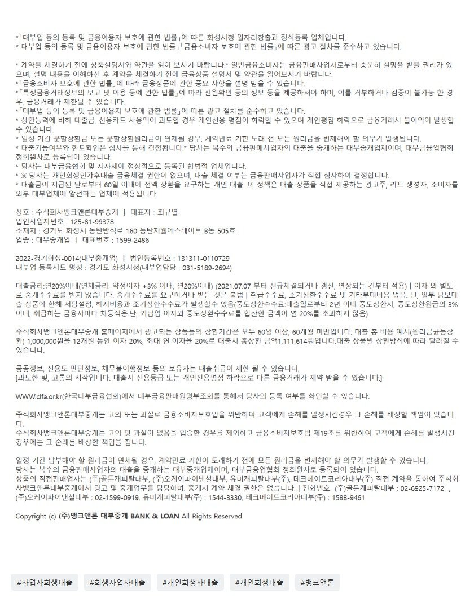

[사업자회생대출사례] 연매출2천만 저소득 그리고 사채 500만 사용중인 사업자 1천만 대출승인사례. (회생사업자대출도 역쉬 뱅크앤론!!)

상담신청 -> https://cafe.naver.com/cityman88/29497

https://cafe.naver.com/cityman88/309288

상담신청 -> https://cafe.naver.com/cityman88/29497
